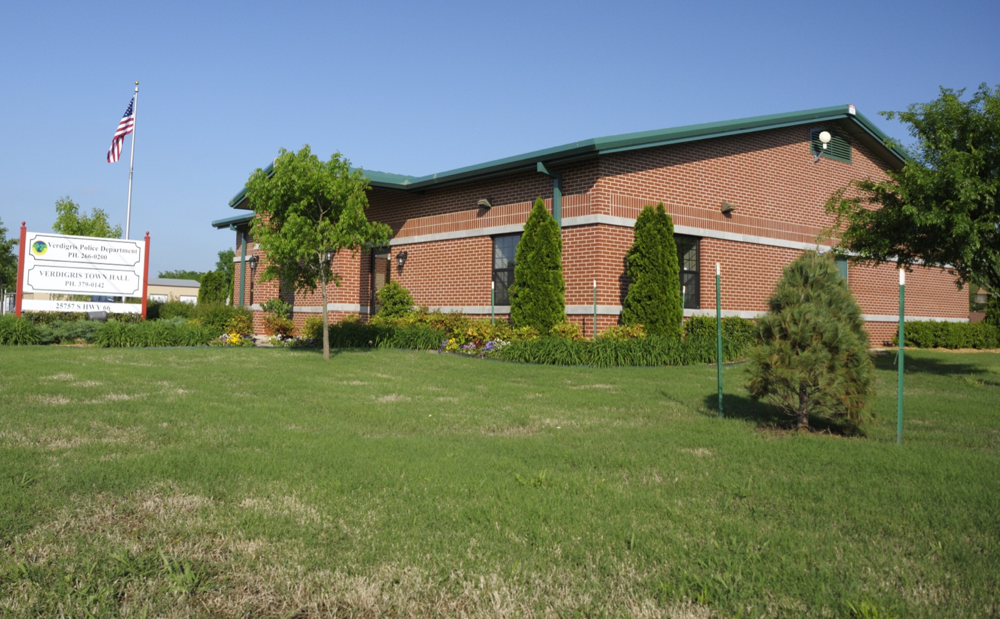

plumber Verdigris OK
Verdigris plumbing help that keeps things simple.
When a Verdigris home has low pressure, a leaking fixture, a backed-up drain, or a water heater that quits, Pacific Plumbing helps identify the issue and explain the right repair path.

Plumbing services in Verdigris, OK.
If you are searching for a plumber Verdigris OK, Pacific Plumbing gives Verdigris homeowners an easy path to the right plumbing service page and a fast way to request help.
How Pacific helps Verdigris homes.
- Leak detection and water line repair for Verdigris homeowners dealing with wet spots, pressure drops, or rising water bills.
- Drain, sewer, water heater, and fixture service for problems that need a clear diagnosis before work begins.
- Re-piping, bathroom and kitchen plumbing, and gas line support for remodels and planned improvements.
Verdigris plumbing help should account for homes outside the dense city core.
Verdigris homeowners often need practical help with water lines, leaks, drains, water heaters, and fixture repairs. Pacific Plumbing keeps the next step clear before work starts.
Common Verdigris plumbing searches.
Homeowners in Verdigris often need a plumber for water heater repair, leak detection, drain cleaning, sewer line help, fixture installation, gas line plumbing, re-piping, and water line repair. Pacific Plumbing connects those needs to dedicated service pages with focused answers.
Verdigris plumbing FAQs
Is Verdigris in Pacific Plumbing's service area?
Yes. Verdigris is included in Pacific Plumbing's expanded Tulsa metro service area.
What plumbing problems do Verdigris homeowners call about?
Common calls include leaks, water heater issues, clogged drains, running toilets, fixture replacements, water line problems, and planned re-piping.
Can Pacific Plumbing help with urgent Verdigris plumbing issues?
Yes. For urgent plumbing problems in Verdigris, call (918) 771-9078 so the team can help you choose the right next step.
Ready when you are
Get out of a slippery situation today.
Call now or request a service window. Pacific Plumbing will help you understand the problem and choose the right fix.
Online booking
Check availability first.
Pop open the booking form, enter your ZIP code, and we will show the next step if you are in Pacific Plumbing's service area.